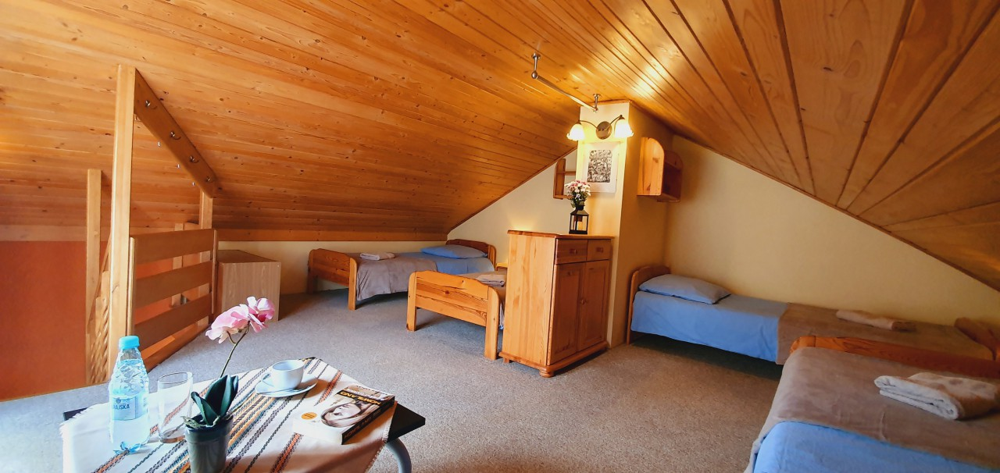
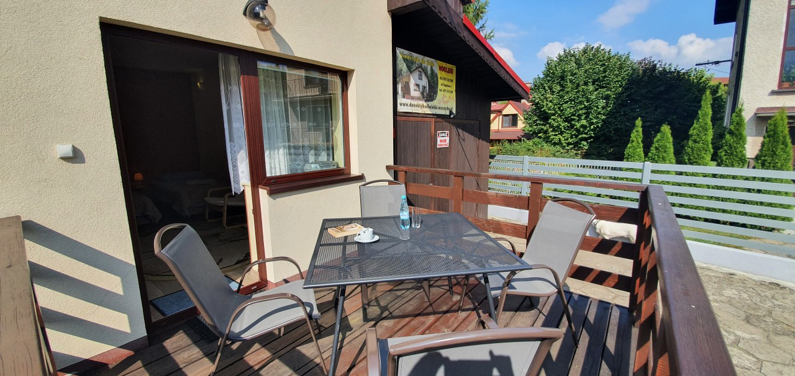
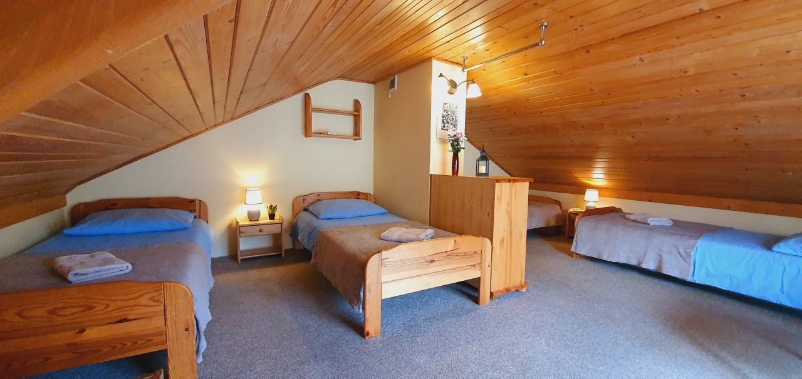
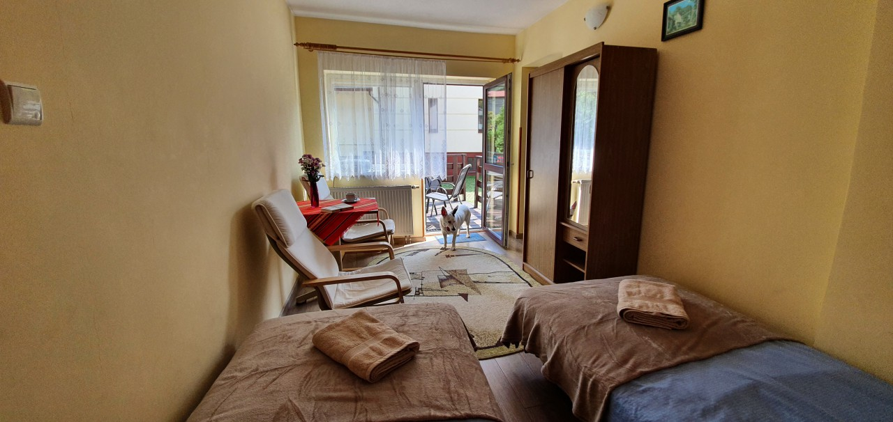
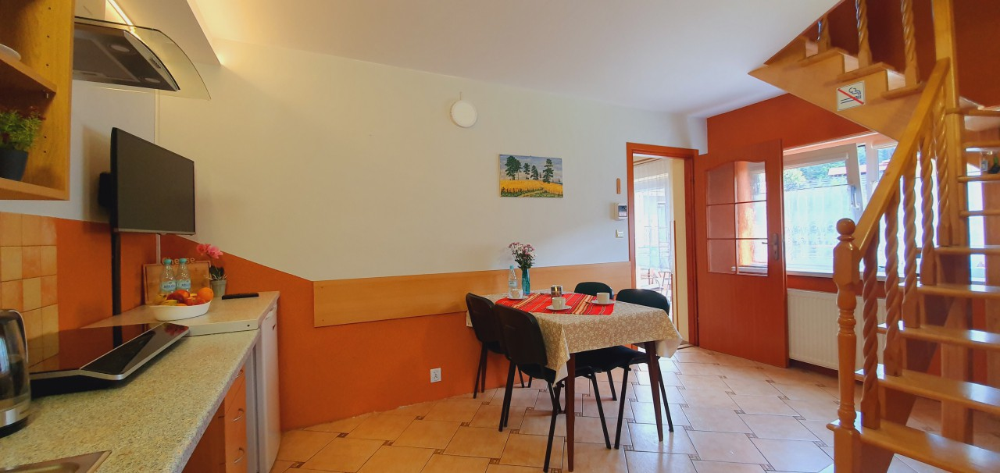
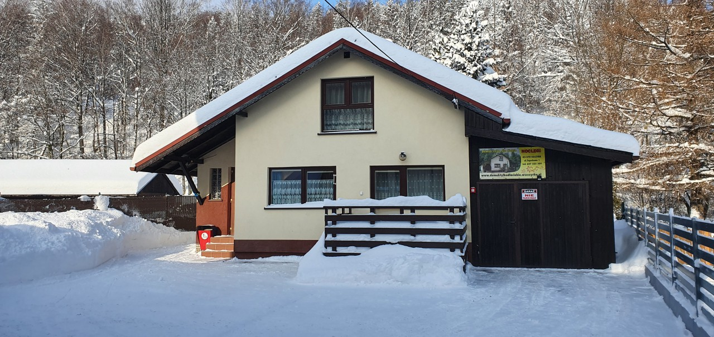

O nas
Poznaj naszą historię
Oferujemy Państwu na wynajem całoroczny domek wypoczynkowy dla 6 osób w Szczyrku. W domu znajdują się dwie sypialnie, łazienka, pokój dzienny z aneksem kuchennym oraz przedsionek z miejscem na narty, rowery itp. Przed domkiem znajduje się darmowy parking, a całość domku jest ogrodzona. Oferujemy również ognisko, grill i kuligi. Naprzeciwko domu znajduje się najwyższy szczyt Beskidu Śląskiego - Skrzyczne (1257 m n.p.m.), gdzie można szusować na nartach. Wyciąg krzesełkowy na Skrzyczne znajduje się w odległości 150 m od Domku.
Domek idealnie nadaje się dla rodzin lub grupy znajomych chcących miło spędzić wolny czas. Domek wynajmujemy tylko jako całość do wyłącznej dyspozycji 6-ciu osób. Domek po każdym wymeldowaniu gości jest dezynfekowany oraz ozonowany profesjonalnym ozonatorem. Domek jest murowany, ocieplony i posiada 65 m2 powierzchni.
Doba pobytowa zaczyna się od godz. 15:00, a kończy o godz. 10:00
Dlaczego
Dlaczego warto nas odwiedzić?
Obiekt przyjazny zwierzętom i dzieciom
First stages in a project are very important to understand your client´s needs. With many different tools we approach.
Atrakcje
First stages in a project are very important to understand your client´s needs. With many different tools we approach.
TV w pokojach
First stages in a project are very important to understand your client´s needs. With many different tools we approach.
Galeria









Księga Gości
Aleksandra Kralovska
Właśnie wróciliśmy z 13 dniowego pobytu w tym domku i jesteśmy super zadowoleni! Trudno sobie wyobrazić lepsze miejsce na odpoczynek i nabranie sił do codziennego życia. Domek jest czyściutki, bardzo przyjemny z fantastycznym widokiem na Skrzyczne. Z tyłu domku jest sad, koło samej rzeki Żylicy, z którego, po prostu, nie chce się wychodzić. W sadzie jest altanka, grill i miejsce na ognisko. Nie straszne są tam żadne upały. Właściciel niezwykle sympatyczny i dbający o wczasowiczów. To naprawdę świetne miejsce na spędzenie urlopu.

Wojciech Lechnio
Czysto, milo, przytulnie. Centrum, a na uboczu. Dzieci i starsi znajda cos dla siebie, aby sie zrestartowac.
Gabriela K-M
Polecam każdemu, przesympatyczny właściciel, miejsce na 5+, wspaniała okolica, lokalizacja idealna-blisko szlaki, centrum. Idealne miejsce na wypoczynek dla rodziny. Polecam! Serdecznie pozdrawiam Pana Andrzeja.
Dariusz Chojnowski
Pobyt w sierpniu 2015 r.Świetna okolica, spokojna, bardzo mili właściciele ,domek idealny dla 4-6 osób, kompletnie wyposażony,czysto, bezpieczne miejsce na samochód,blisko do szlaków na okoliczne szczyty, wszystko co niezbędne do grilowania, delikatny szum potoku....Nie chce się wyjeżdżać....Na pewno wrócimy. Ps. Pozdrowienia dla Markera i Marudy....:)
Ania i Maciek z dziećmi
Spędziliśmy tutaj z dziećmi 16 cudownych dni. Piękny domek, czysty i zadbany, z uroczym ogrodzonym miejscem na ognisko i zejściem do rzeczki. Położony blisko wyciągu na Skrzyczne. W pobliżu sporo sklepów spożywczych, restauracji i knajpek. Właściciel - Pan Andrzej - to przemiły człowiek, ogromnie życzliwy i dbający o swoich wczasowiczów. Pozdrawiamy serdecznie Pana i rodzinę:)
Jestesmy
Jestesmy zachwyceni domkiem i gospodazami atmosfera super klimatem w szczyrku stoki narciarskie miasteczko karczmy noi rewelacyjny sylwester 2010\\\\2011 pod skocznia piekne widoki bylismy z rodzina i znajomymi i i i napewno wrocimy jeszcze nieraz pozdrawiamy Andrzeja i Urszule pszemilych wlascicieli Pozdrowienia FRA NORGE
U nas zimą
Poznaj nas zimą
Jednym z najciekawszych miast turystycznych jest Szczyrk. Jest to miejsce bardzo chętnie odwiedzane zarówno w okresie letnim, jak również zimowym. Miasto jest przygotowane jest na przyjęcie ogromnej liczby turystów, ponieważ oprócz świetnie rozbudowanej bazy noclegowej możemy znaleźć wyciągi w szczyrku . Oczywiście warto przyjechać tu również w okresie letnim, ponieważ w okolicy znajduje się mnóstwo ciekawych miejsc, do których możemy się udać.
Przyjeżdżając do tej uroczej miejscowości warto wiedzieć, że Szczyrk wyciągi narciarskie ma przystosowane zarówno dla początkujących, jak również zaawansowanych narciarzy.Warto zabrać całą rodzinę, gdyż z pewnością każdy znajdzie coś ciekawego dla siebie. Zjazdy narciarskie stanowią tak interesującą atrakcję, że wielu ludzi mimo strachu decyduje się na nią, a aktywny wypoczynek jest w tej chwili bardzo modny.
Doba pobytowa zaczyna się od godz. 15.00, a kończy o godz. 10.00

Odwiedź
nas!
Zapraszamy do kontaktu
ANDRZEJ MAREK, ul. Topolowa 1
43-370 Szczyrk